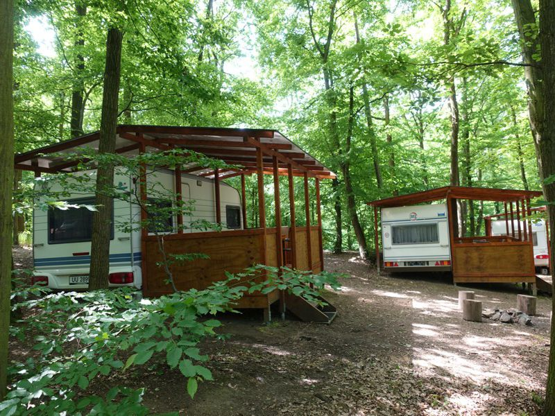
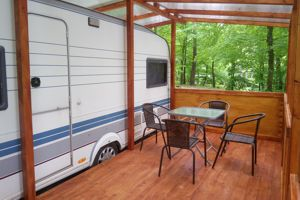
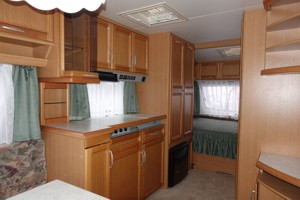
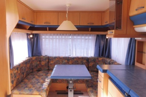
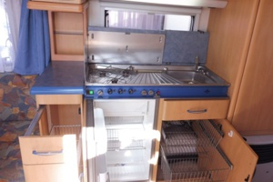
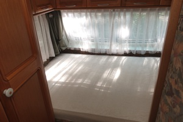
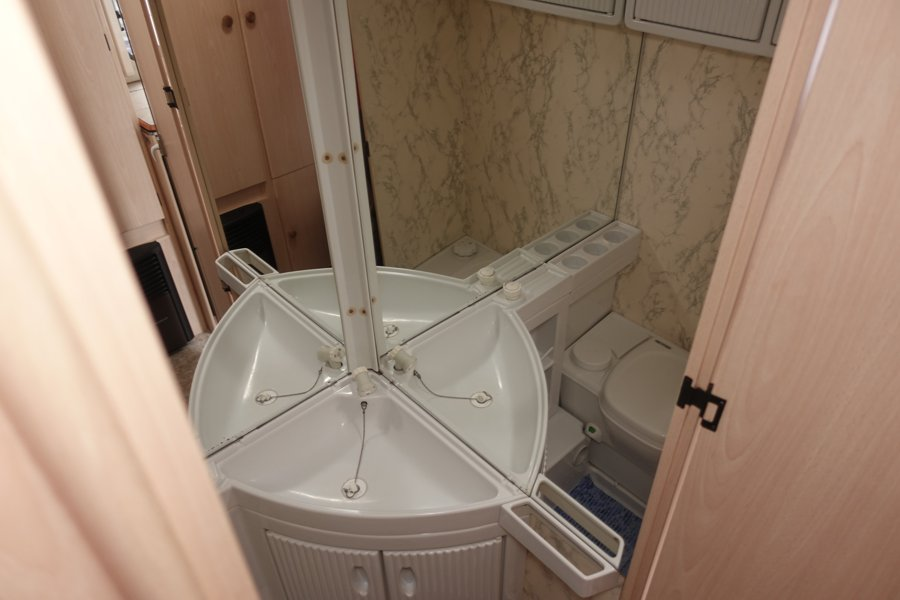
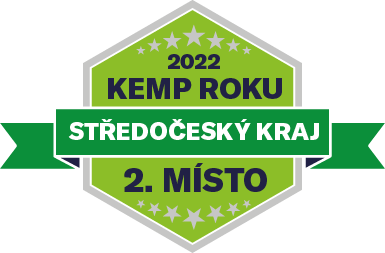
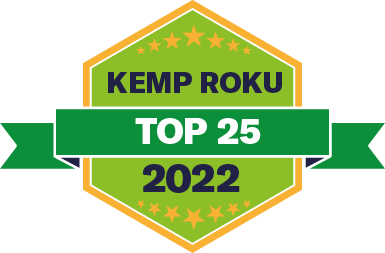

Karavany
Ubytování v karavanech
Nabízíme pronájem karavanů, napevno umístěných v kempu. Karavany mají rozměry kolem 5 x 2 m, respektive 5 x 4 m včetně zastřešené verandy. Každý karavan nabízí pohodlné spaní pro 4 osoby a je vybaven kuchyňkou s plynovým vařičem, malou chladničkou a dřezem. Najdete zde i základní nádobí a varnou konvici. Karavany jsou dále vybaveny elektrickým topením a koupelničkou s umyvadlem. K dispozici je elektřina 230 V pro osvětlení a drobné spotřebiče. Před každým karavanem je malý plácek s ohništěm. Veranda je vybavena čtyřmi zahradními židlemi a stolkem. Karavany jsou umístěny v severní části tábořiště, nad přilehlou zátokou. Vzdálenost k vodě (břeh zátoky) je jen pár metrů. Je tam však poměrně strmý svah. Dobře přístupný břeh hlavního toku, vhodný ke koupání, je vzdálen ca. 50 až 100 m. Docházková vzdálenost k WC a sprchám je do 50 m, ke kiosku 100 až 150 m.
Karavany nejsou připojeny k vodovodu; vodu je třeba přinést v kanystru nebo použít společnou umývárnu (kanystr je ve výbavě karavanu).
Lůžkoviny nejsou k dispozici, je třeba mít vlastní.
V den příjezdu karavany předáváme od 15:00 do 18:30.
Před odjezdem je třeba karavan uklidit a předat mezi 10:00 a 12:00.

Fotogalerie






Ceny za pronájem karavanů
Hlavní sezóna - Karavan za den 800 Kč + Kauce 1000 Kč
Vedlejší sezóna - Karavan za den 700 Kč + Kauce 1000 Kč
- K pronájmu karavanu platíte i za jednotlivé osoby, auto atd. dle ceníku.
- Karavan je třeba předem rezervovat a dle pokynu provozovatele uhradit rezervační poplatek (kauci) ve výši 1000 Kč.
- V případě zrušení rezervace 14 a méně dnů před začátkem pobytu, propadá rezervační poplatek provozovateli.
- Pobytová cena se po příjezdu platí v plné výši, dříve uhrazený rezervační poplatek přebírá funkci kauce za karavan a jeho vybavení, a vrací se až při ukončení pobytu.
- V uvedené ceně je zahrnuta spotřeba elektřiny a plynu.
Rezervace
Rezervujte na tel. 797 726 085 nebo lesnitaboriste@email.cz.
- V případě zájmu o rezervaci si v níže uvedené tabulce nejprve vyberte volný termín.
- Ve sloupcích A až F jsou uvedeny jednotlivé karavany k pronájmu.
- Zeleně jsou označeny volné termíny, červeně termíny obsazené. Oranžová barva značí předběžné, tedy nepotvrzené rezervace. V případě zájmu o takový termín můžete požádat o zápis na waitlist.
- V červenci a srpnu prosím volte termín vždy alespoň na 7 dnů, od soboty do soboty, nebo tak aby navazoval na již rezervované pobyty. V opačném případě účtujeme příplatek ve výši 400 Kč za každý den do počtu sedmi (pobyt kratší 7 dnů však není nárokový a provozovatel je oprávněn takovou rezervaci neposkytnout). Uvedený příplatek neúčtujeme, pokud zvolíte termín který na začátku nebo konci navazuje na již rezervovaný pobyt a současně začíná nebo končí sobotou. Příplatek se dále nevztahuje na pobyty na poslední chvíli (last minute).
- V období vedlejší sezóny naopak nabízíme pobyty libovolné délky od dvou dnů.
Dostupnost karavanů
Přehled níže je pouze informativní a průběžně se aktualizuje.
Naše ocenění

